| 日付 | 2012年10月20日（土） |
|---|---|
| 山域 | 浅間周辺 |
| メンバー | 家族（妻、長女・1歳） |
| 山行形態 | 子連れ日帰り |
| アクセス | 車 |
| ルート (Map) | 二度上峠 (9:11) - (10:22) 浅間隠山 (11:54) - (13:01) 二度上峠 |
浅間隠山は浅間山の東にある角落山塊の最高峰である。
中之条方面から見ると浅間山を隠してしまうために、このような名がついている。
山頂からの展望が素晴らしい山ということで以前から登って見たかった山だ。
以前は鼻曲山から縦走し浅間隠温泉に下るというロングコースの計画を立てていたが、
車があれば短時間で登ることができるため、今回は短いコースを選択。
久々の浅間山の大展望を求めて、晴天の浅間隠山に登ることにする。
二度上峠近くにある浅間隠山登山口に到着。標高1340m。
人気の山でそこそこ車が停まっているが混雑というほどではない。
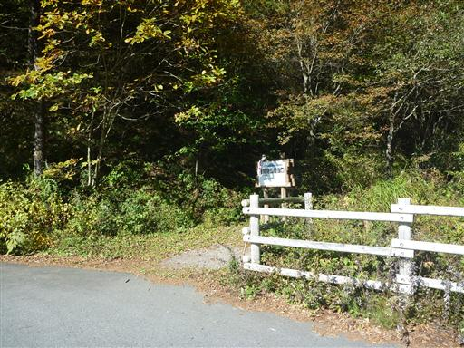
静かな樹林帯の中を登っていく。
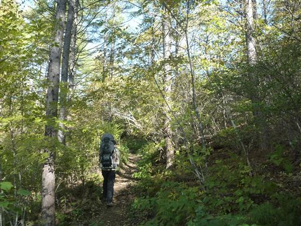
この登山道はとにかく分岐点が多い。
急坂の道、緩やかな道、太い道、細い道など、
どの道を行っても山頂には到達するのだが判断に迷う。
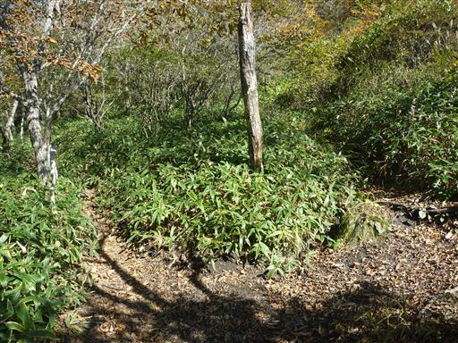
両側の笹の背が高く圧迫感がある。
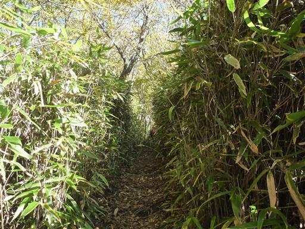
標高を上げていくと紅葉している木が見られるようになる。
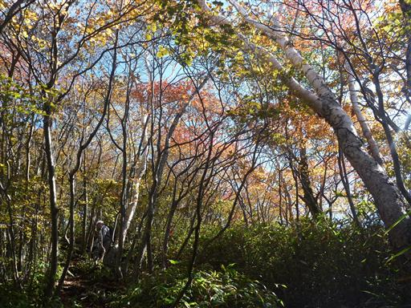
地面が脆いからか、道が崩壊している場所があちらこちらにある。
荷物が重いため大股で乗り越えていくのは大変だ。
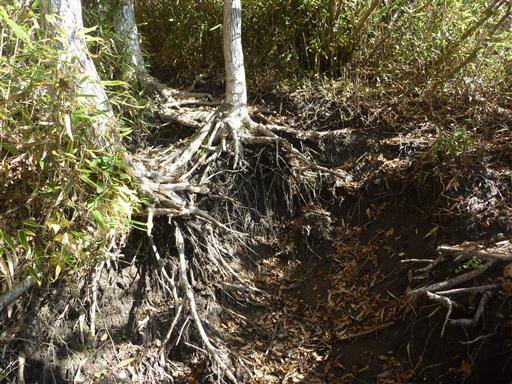
美しく色づいたモミジと白い幹の組み合わせが美しい。
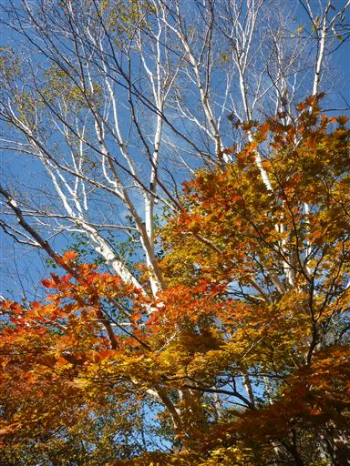
深い笹薮の中を歩いていく。
人気の山であり登山者が多いコースなのに、これほど笹薮が生い茂るとは不思議だ。

山頂近くになると笹が低くなり一気に展望が開ける。
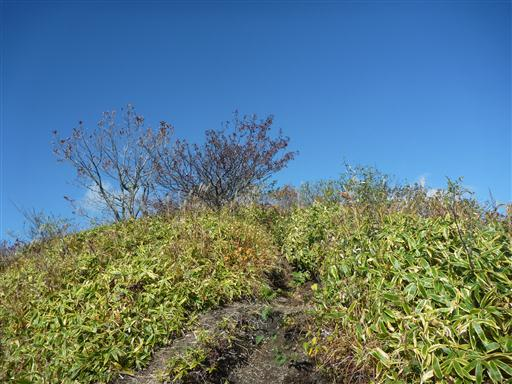
目の前に広がるのは角落山塊の山々。一番高く見えるのは鼻曲山だ。
斜面は尾根が複雑に分岐していて、まるで海の波のようだ。
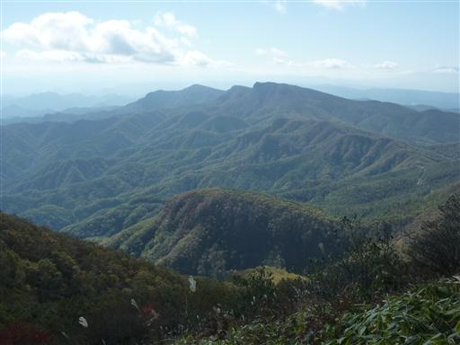
こちらは榛名の山々。
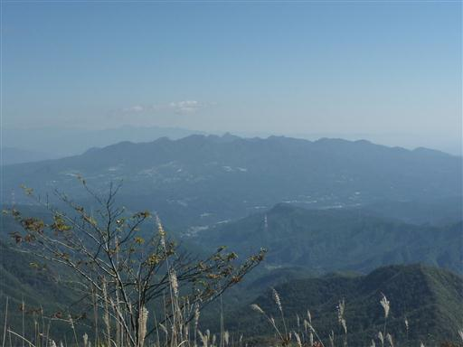
展望が広がってから一登りで浅間隠山山頂に到着する。標高1757m。
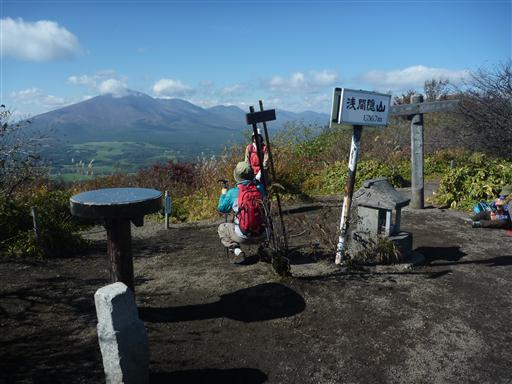
土がえぐれて山頂の三角点はほとんどむき出しになっている。
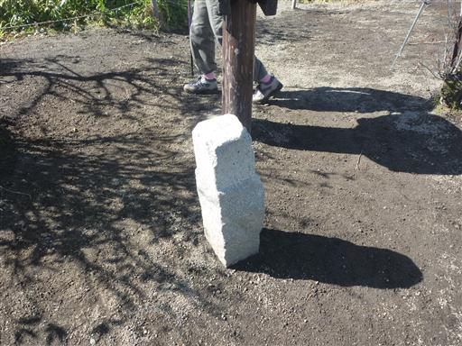
山頂は360度の大展望が広がる。まず目に飛び込んでくるのが浅間山。
その右には黒斑山や篭ノ登山などの懐かしい山々が並ぶ。
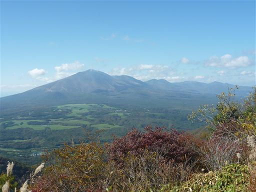
北方には草津白根山や岩菅山など、まだ見ぬ山々が広がっている。
歩行時間が短いため、展望の良い山頂でのんびりと時を過ごす。
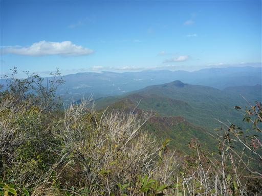
1時間半ほど山頂に滞在し、下山を開始する。
余り長い時間休憩していると下山が億劫になってくる。
目の前に見える鋭いピークはかつて登った角落山だ。
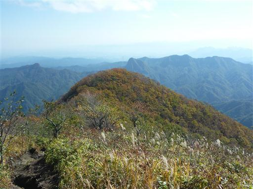
二度上峠の駐車場に下山。時間は早いが寄り道せずに帰ることにする。
歩行時間は短いながらも大展望を満喫できる山行だった。
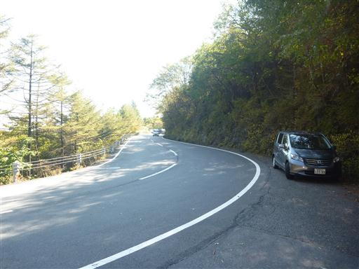